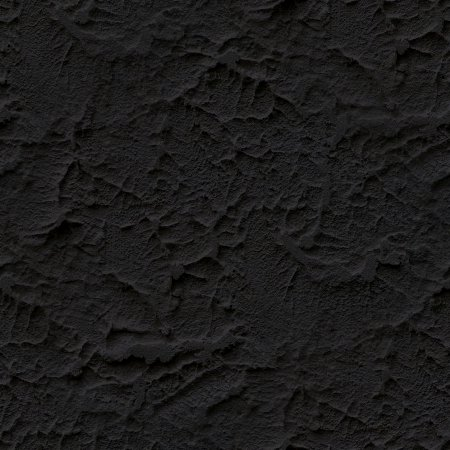

Styling the Hamburger Menu
The Hamburger Menu has a number of easily configurable customization options as well as full css styling support. Read through and try out the examples below and have fun!
Colors
The icons and headers will inherit $ui-brand-color by default, but you can customize the individual colors using the $tray-settings configuration below:
$tray-settings:(
color-icon: #9A9A9A,
color-header: #9a9a9a,
color-link: #eee,
color-rail: #eee
);
Background Image
Repeating Pattern
Right click and save the following image into your output/images/ folder then copy/paste the code below into your settings file and save. You'll notice the background-size attribute which scales the texture down from it's original size which is helpful for retina displays.
| Pattern Image: |
|---|
|  |
$tray-styles: (
background: url("images/acme_tray_bg.jpg"),
background-size: 100px 100px,
color:#eee
);
Full Image
Right click and save the following image into your output/images/ folder then copy/paste the code below into your settings file and save. You'll notice the background-size attribute which scales the texture down from it's original size which is helpful for retina displays.
| Background Image: |
|---|
$tray-styles: (
background: url("images/acme_tray_full.jpg"),
background-size: cover,
color:#eee
);
Overlay Image
It's possible to overlay an image on top of your background. Right click and save the following image into your output/images/ folder then copy/paste the code below into your settings file and save.
| Overlay Image: |
|---|
$tray-overlay-styles: (
background: url("images/acme_tray_stamp.png"),
background-repeat: no-repeat,
background-size: 180px auto,
width: 200px,
margin-left: -650px,
top: 100px
);